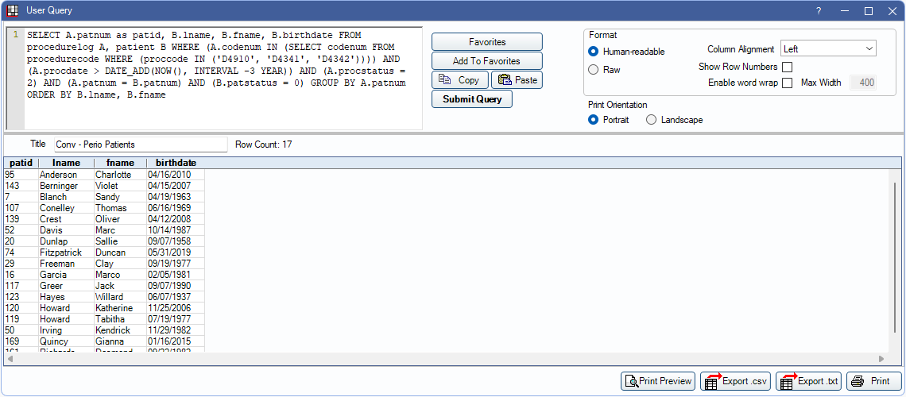

Conversions: Perio
During a final Conversion, we default every patient to a 6 month Prophy recall type. Before we deliver the final conversion, we run a script that changes all patients with completed procedures for D4910, D4341, and D4342 in the last three years to a four-month Perio recall.
To view a report of which patients were converted to Perio to go User Query Favorites. Double-click the Conv - Perio Patients query
Change an individual patient's recall in the Family Module, Recall area.
To change default intervals, see Recall Types. Be cautious when editing recall types as changes affect the entire recall system.
Resource: Post-Data Conversion Setup Checklist